The Error Heart 캠페인에 등장한 플레이어 캐릭터와 NPC. 캠페인 종료 후 정리 페이지이므로 결말과 반전(에일라의 정체, 기계 에일라의 진실, 실반의 비밀 등)을 숨기지 않고 서술한다. 근거는 인물 데이터베이스와 세션 노트·마스터 메모(“아르카딘과 에일라”, “군단의 사정”)를 함께 따랐고, 데이터베이스에 짧게만 적힌 인물은 세션에서 드러난 행적으로 보강했다. 카드 형식은 자매 캠페인 Relight의 인물 페이지와 같다.
플레이어 캐릭터 (PC)
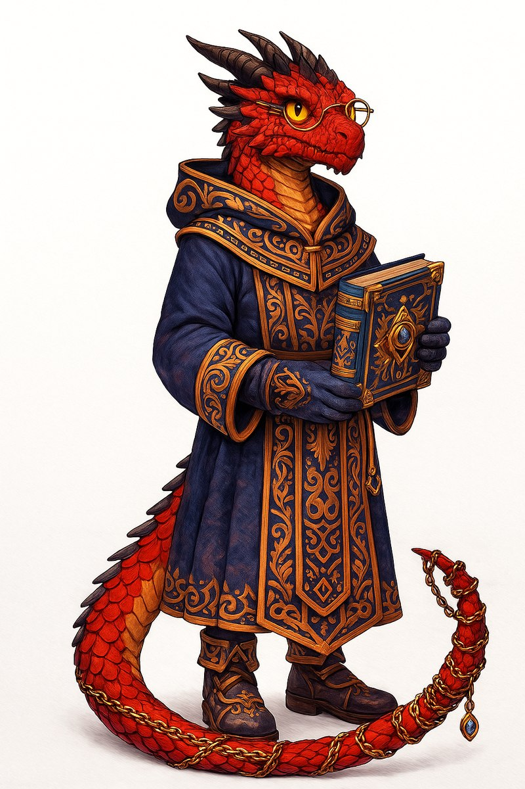
콰에리온 녹티스
200년 넘게 쌓은 지식과 식지 않는 호기심으로 뭉친 학자형 마법사. 친한 이들은 그를 ‘녹트’ 또는 ‘리온’이라 부른다. 과거 자신의 오만과 욕심이 부른 과오로 마을 하나가 한순간에 통째로 지상에서 사라졌고, 실수를 저지르기 전으로 돌아가 모든 것을 되돌리기 위해 타임리프 마법을 찾아 여행에 올랐다. 고지식하면서도 남의 일에 참견하지 않고는 못 배기는 성격이다. 시공간과 인과를 다루는 마법에 능해, 한 발짝 떨어져 상황을 관조하는 ‘안경 쓴 도마뱀’ 같은 면모를 보였다.
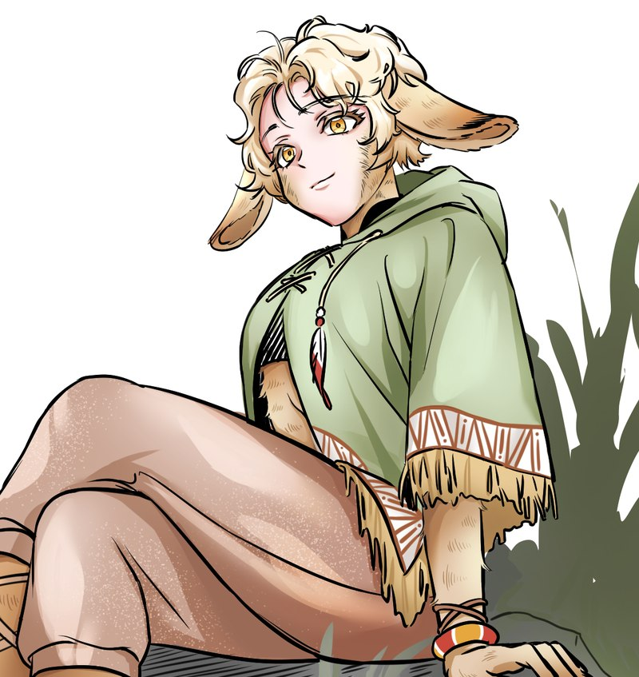
판델라
원더본에서 태어난 퍼볼그와 인간의 혼혈 드루이드. 사냥꾼인 인간 어머니와 퍼볼그 아버지 사이에서 어느 쪽에도 온전히 속하지 못한 채 자랐고, 15세 생일날 토끼로 변신한 자신을 사냥감으로 오인한 어머니의 화살에서 친구 토끼 ‘베이나’가 대신 목숨을 잃는 참극을 겪었다. 그 뒤 은둔 드루이드 ‘할멈’에게 거두어져 수행하며, 염세적이고 베베 꼬인 말투 속에 자신의 능력에 대한 강한 자부심과 집념을 품게 되었다. 나른하고 사람 좋아 보이는 인상과 달리 입을 열면 배려 없는 직설을 쏟아내지만, 표정도 어조도 없는 에일라에게 매번 적절한 반응을 되돌려주며 이야기를 풍부하게 만든 인물이다.
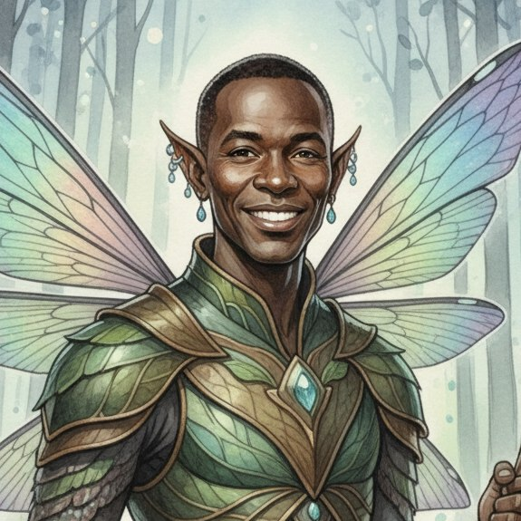
자글롬
슬라이본의 거친 뒷골목에서 자란, 말장난을 사랑하는 페어리 바드. 암암리에 전해지는 ‘깔깔유머집’을 성서처럼 품고 다니며 언젠가 사람들을 웃길 수 있으리라는 기대를 버리지 않는다. 자이언트 캄버리를 운명의 짝이라 여겼으나 종족의 장벽과 사소한 두려움 끝에 그를 떠난, 이루지 못한 사랑의 기억을 안고 있다. 정작 공연으로는 먹고살 수 없어, 뒷골목에서 익힌 ‘세상의 규칙을 비틀어 빠져나가는’ 재주로 웃기는 것을 제외한 모든 방법으로 상대를 움직인다.
녹슨 못 여관
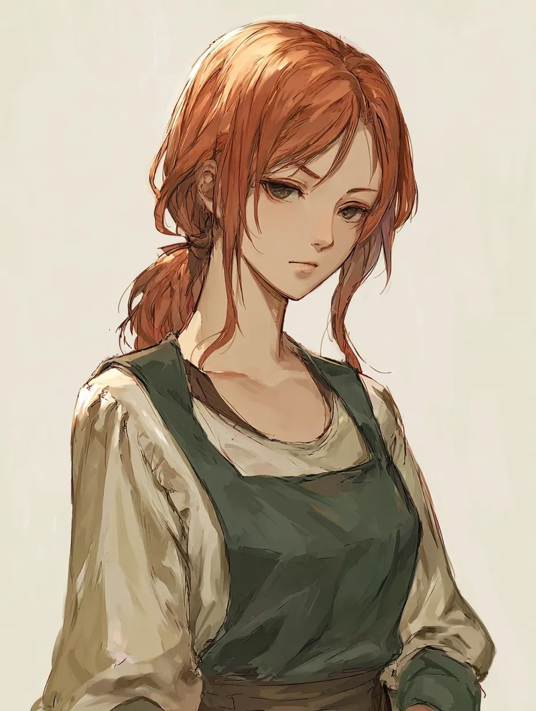
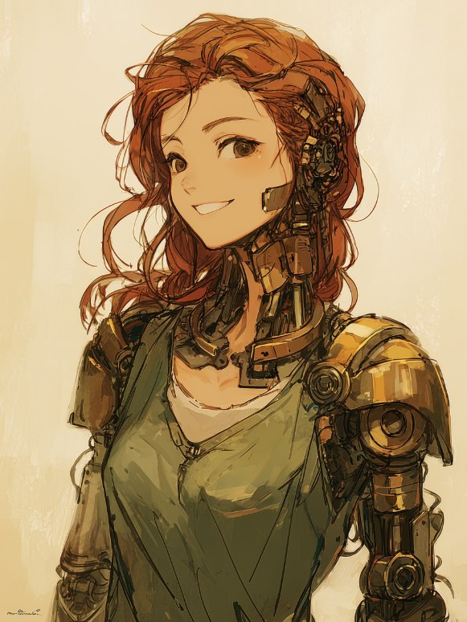
에일라
녹슨 못 여관에서 일하는 종업원 에일라 그린폿. 12세에 감정을 잃는 병에 걸려 표정도 어조도 없이 담담하게 말하고 행동한다 — 감정을 감추는 것이 아니라 정말로 반응이 없는 것이다. 그 정체는 134년 전 마법학자 아르카딘이 ‘감정 결핍증’ 연구를 위해 사들인 소녀로, 실험 사고에서 아르카딘을 구하려다 두 다리를 잃고 그와 부녀 같은 사이가 되었다. 아르카딘은 감정과 기억을 잃어가는 에일라를 기계로 복제해 ‘기계 에일라’(둘째 초상)를 만들었고, 남겨진 생물 에일라의 몸은 조수 세라가 신전에서 120년간 시간 냉동해 보존하다 7년 전 누군가에 의해 깨어났다. 기억을 모두 잃고 이름만을 기억한 채 모험가로 자란 그는, 자신을 ‘진짜’라 주장하며 시민들을 희생시켜서라도 자신을 쫓아온 기계 에일라와 끝내 마주해, “당신이 에일라가 맞다”고 인정하면서도 그 죄를 물어 그를 멈춰 세운다.
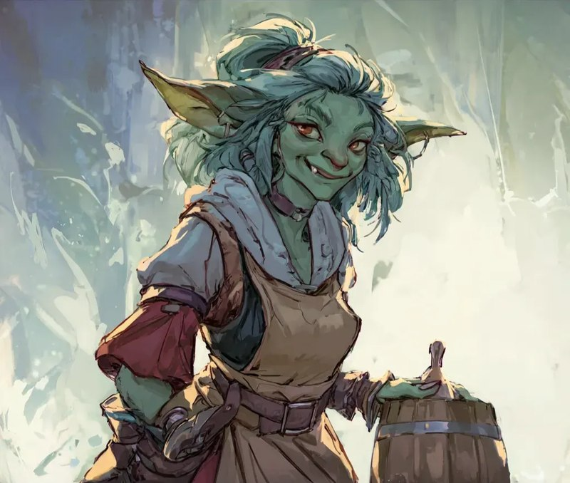
스트레가
녹슨 못 여관을 경영하는 호탕한 고블린 여성. “오늘은 내가 쏜다!”며 손님들에게 술을 돌리는 왁자한 성격으로, 일만 하는 에일라를 늘 걱정하며 제발 일 생각 말고 즐기라고 다그친다. 겉으로는 툴툴대도 에일라를 제 식구처럼 아껴, 1화에서 에일라를 노린 고양이 인형의 습격에 쟁반을 들고 몸을 던져 막다가 어깨를 깊게 찔린다.
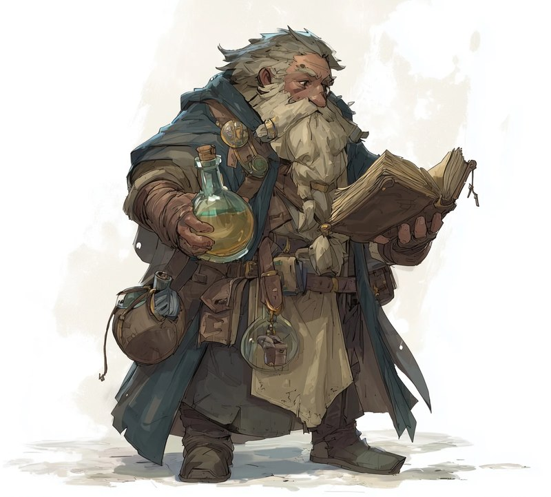
토라스 리프핸드
녹슨 못 여관에 묵고 있던 드워프 치료사. 여관이 기계 인형들에게 습격당하자 다친 이들에게 응급처치를 해주고 일행을 따라나선다. 여정 내내 파티의 부상을 돌보는 조용한 손이 되어준다.
여정의 동료
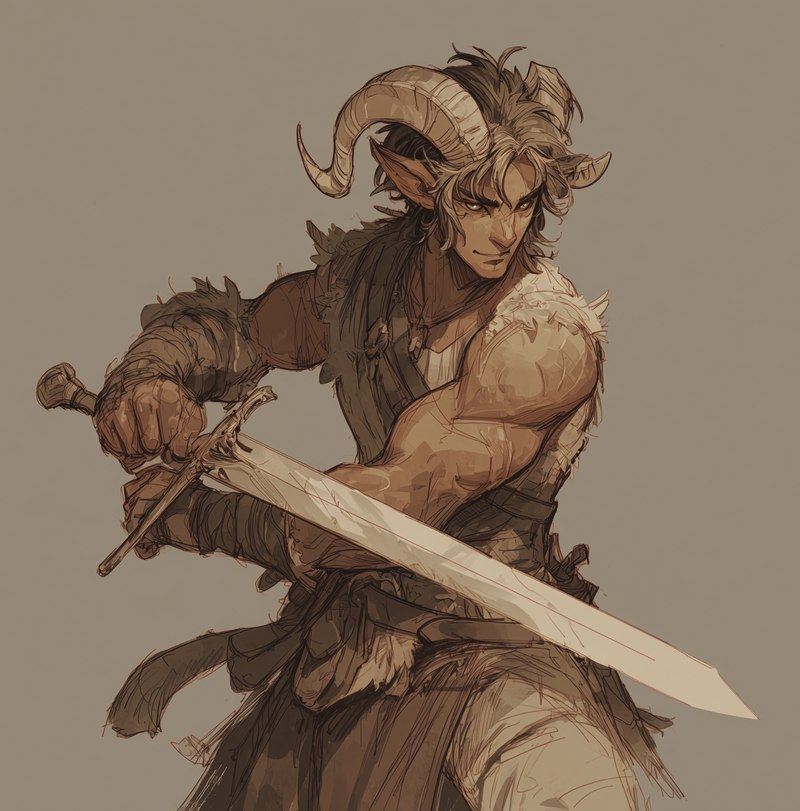
세틀러 브라이진
납치되었다는 동생 실반을 찾아 천문대로 온 파운 워리어. 솔직하고 직선적이며 은인을 그냥 보내지 못하는 성격이라, 한 세션짜리 조력자로 등장했다가 결국 캠페인 끝까지 파티와 동행했다. 천문대에서 마주한 실반에게서, 사실 동생이 2년 전 이미 죽었고 자신이 그 강렬한 슬픔으로 기계 공장을 태워 실반을 몇 번이고 되살려 왔다는 잔혹한 진실을 듣는다. 전투를 도맡을 사람이 마땅찮던 파티에서 홀로 앞장서 검을 든, 이 캠페인 유일의 ‘함께 싸우는’ 동행이었다.
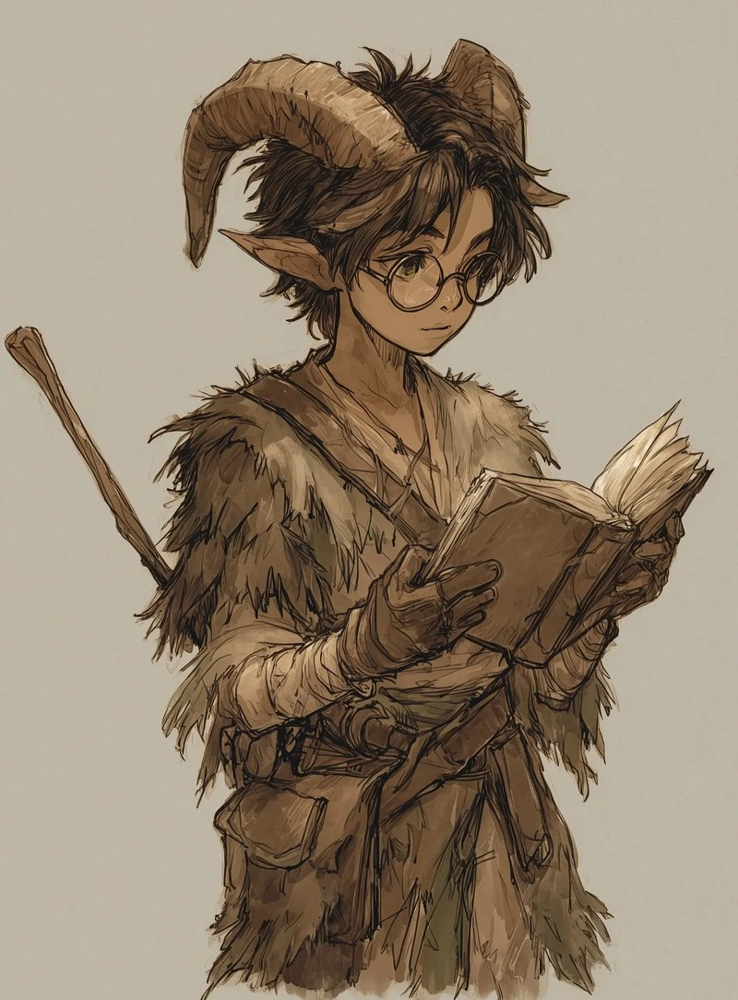
실반 브라이진
세틀러가 그토록 찾아 헤맨 동생. 그러나 진짜 실반은 2년 전 던전에서 돌아오던 길, 천장에서 쏟아지는 함정 레이저에 잠든 형을 순간이동시켜 구하고 자신은 그 자리에서 즉사했다. 시신마저 증발해 죽음의 증거를 찾지 못한 세틀러의 격렬한 감정을, 천문대에 남아 있던 감정·기억을 심는 기계 공장이 [증폭]해 형의 기억 속 실반으로 되살려낸 것이 지금의 그다. “나는 실반이 아니야, 형. 형 안에 남은 실반의 메아리일 뿐이야” — 몇 번이고 반복되는 재회에 지친 그는 형에게 자신을 그만 만들어 달라 애원한다.
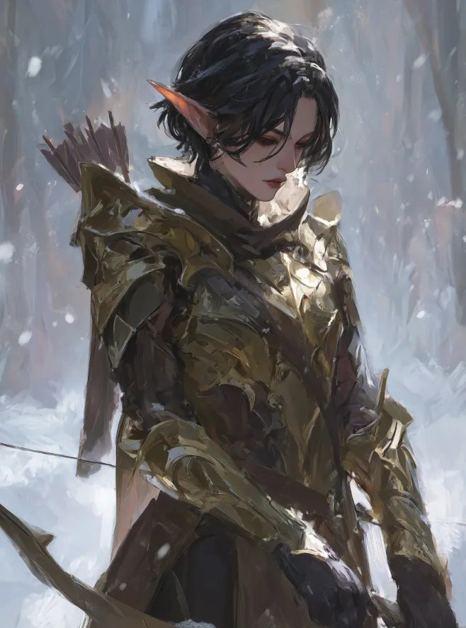
타임필드
본명 세라 타임필드. 127년 전 마법학자 아르카딘의 조수이자 연인으로, 시공간을 다루는 마법은 스승 아르카딘조차 능가했다고 전해진다. 아르카딘이 에일라를 기계로 복제한 뒤 ‘폐기’하라 넘긴 생물 에일라의 몸을, 차마 버리지 못하고 신전에서 시간 냉동해 120년간 지켜온 장본인이다. 자신의 생각과 얽매인 마음을 굳이 드러내지 않는 복잡하고 성숙한 인물로, 일행과 동행하며 아르카딘과 에일라를 둘러싼 진실을 담담히 전한다.
군단의 잔당들
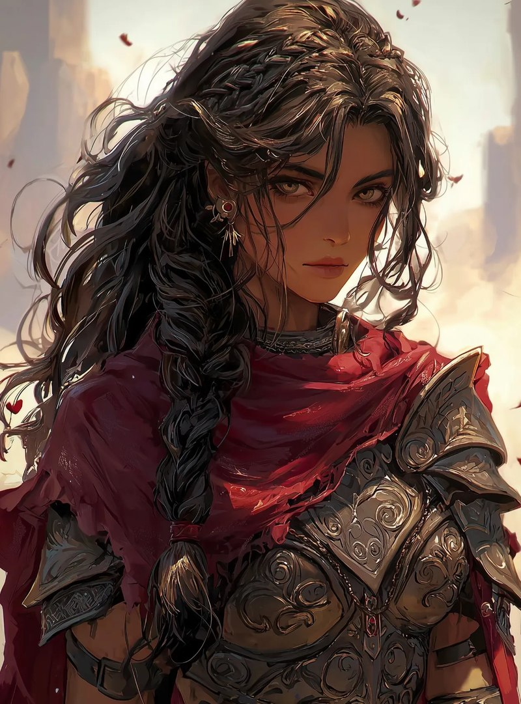
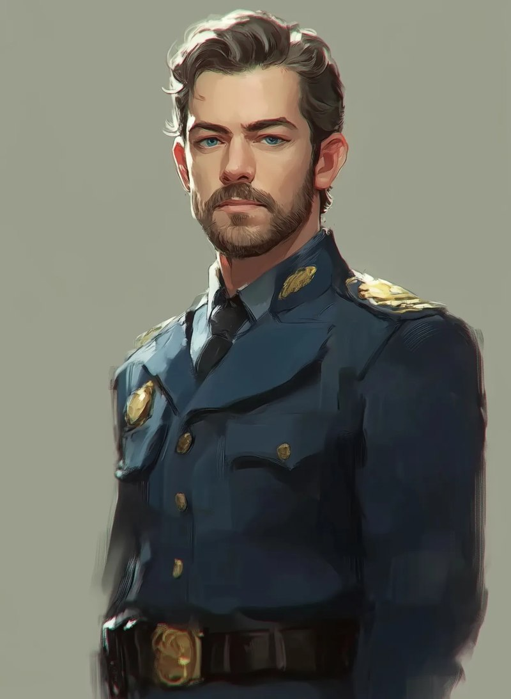
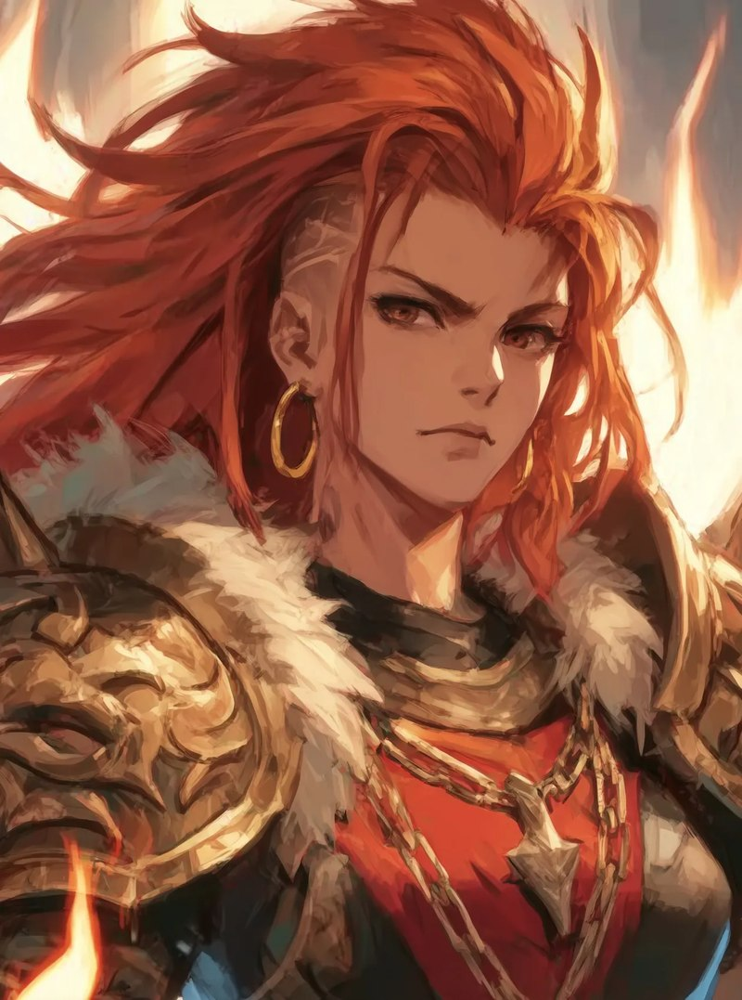
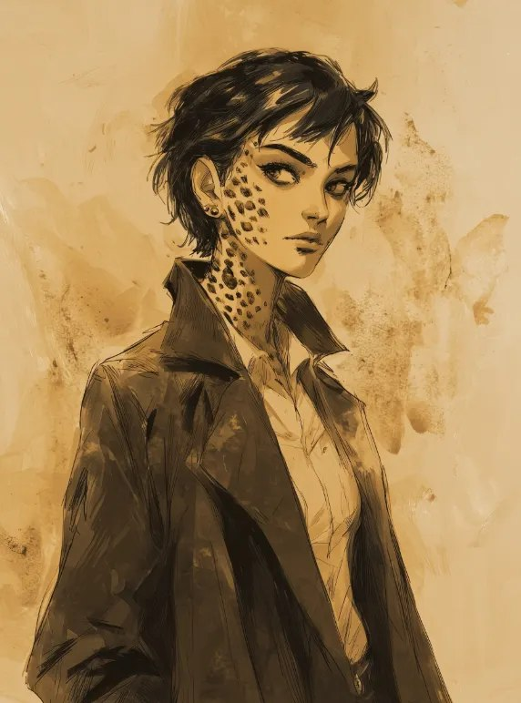
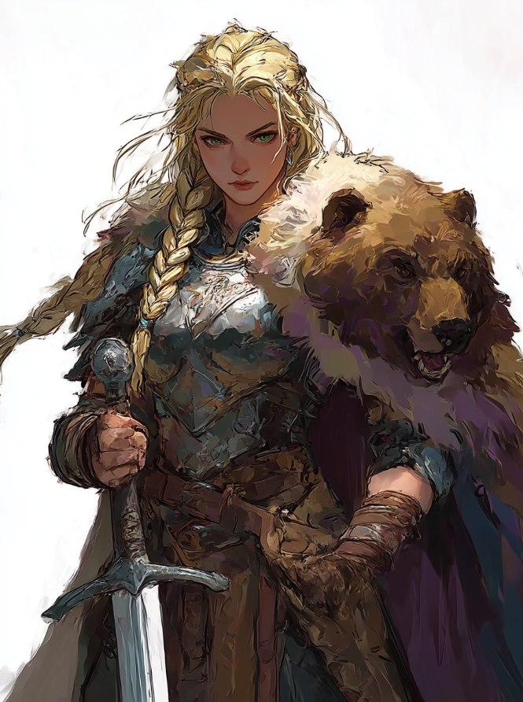
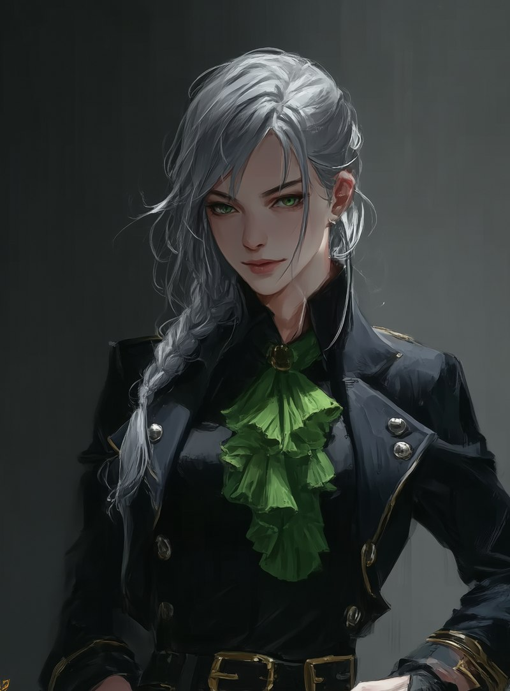
군단의 잔당들
언데드의 군세와 벌인 전쟁을 끝내고 어떤 이유로 대륙 동쪽 끝까지 흘러온 ‘군단의 잔당들’. 알더마크 평원에서 하늘화살 성채까지 밀려 항전한 끝에 살아남은 이들로, 사도 레이피어와 일레나를 다시 인간으로 되돌릴 방법을 찾아 전설적 마법사 아르카딘의 흔적을 쫓아 이실리아 동쪽 끝까지 왔다. 붉은 깃발의 사도 레이피어, 능력주의자 장교 도베르트 다 사니치, 불같은 의무병 붉은 발티야, 표범 얼룩의 척후병 은빛 사붓한 바람, 곰 가죽을 두른 중전사 황금빛 타오르는 눈보라, 그리고 자비사 출신의 사도 일레나로 이루어져 있다. 이들이 넘어온 산맥 서쪽의 이야기는 자매 캠페인 Relight에서 이어지며, 그곳에서 잿불의 왕은 쓰러지고 군단은 해산했다.
린들필드 여관
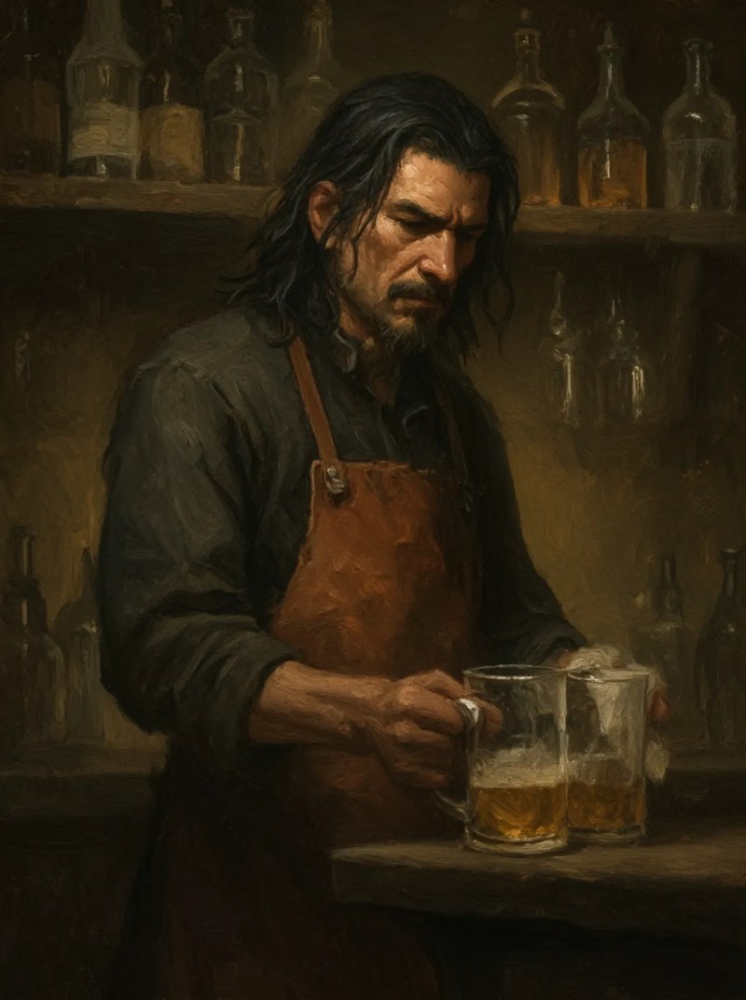
콜린 브루어
린들필드 여관의 주인. 손님 하나하나 챙길 여유는 없다며 응대는 종업원 유리드에게 맡기는, 늘 바쁜 여관 주인이다.
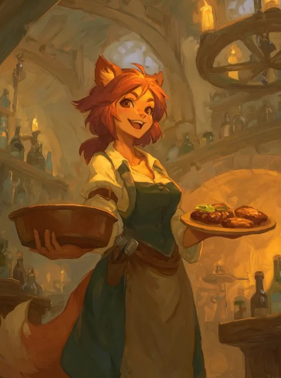
유리드 투어리
린들필드 여관에서 앞치마를 두르고 활기차게 손님을 맞던 카타리 여성. 방긋 웃으며 주방과 홀을 오가던 그는, 마을이 기계 인형들에게 습격당해 불타던 날 잔해에 깔려 죽기 직전까지 몰린다. 세틀러가 간신히 구해내자, 목구멍에서 단어를 쥐어짜내며 “에일라를 찾고 있었어요… 도망쳐요”라는 경고를 남긴다.
브라에스 시
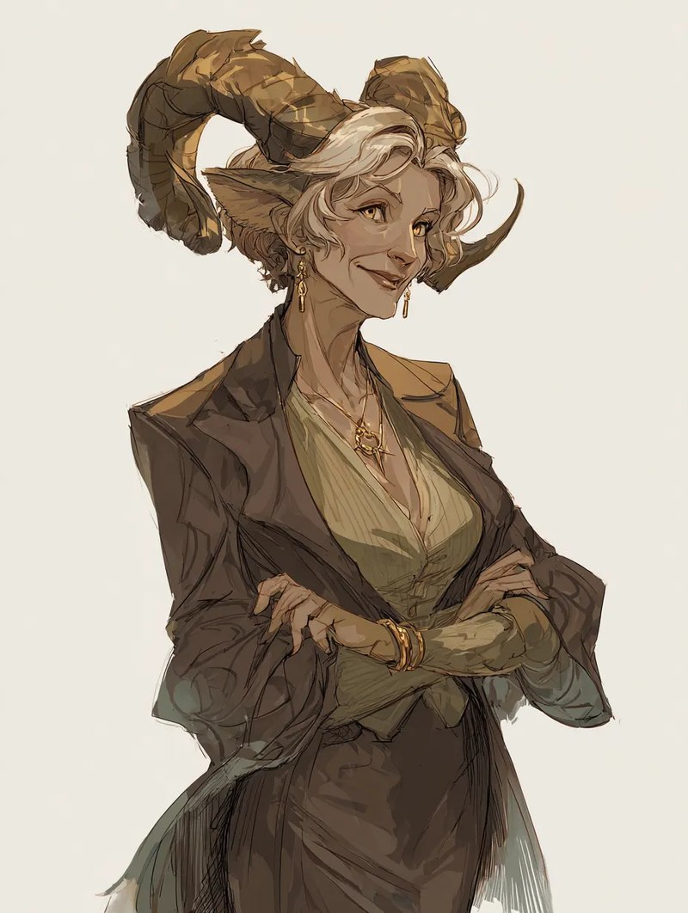
메이퀸 발로
대륙 동쪽 끝 브라에스 시의 시장. 기계 심장으로 움직이는 인형들을 도입해 촌구석이던 도시를 그럴싸하게 부흥시킨 유능한 행정가로, 자동 서기 인형을 곁에 두고 늘 서류에 파묻혀 산다. 익숙한 미소 사이로 이따금 도시의 앞날을 걱정하는 기색이 스친다. 최종화, 폭주한 기계 에일라가 시민 전체를 몰살할 스위치를 들어 올리자 비서 클락시와 함께 그 손을 붙잡아 스위치를 빼앗아 박살낸다.
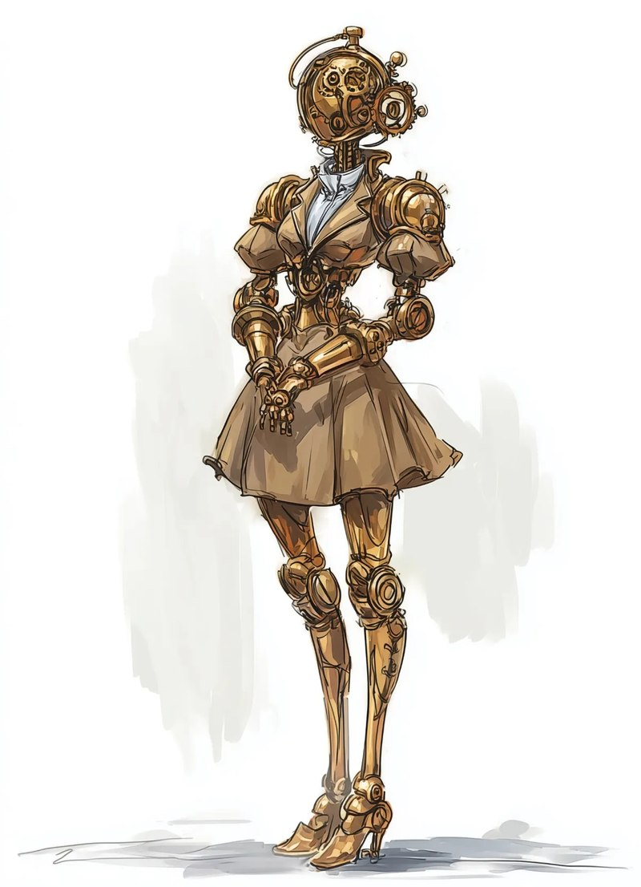
클락시
브라에스 시장 메이퀸 발로의 개인 비서인 클랭크(기계 종족). 무용수처럼 우아하게 인사하고, 이모지를 섞어 “지시하신 대로 모셔왔습니다!! ✨” 같은 식으로 말하는 특유의 화법이 인상적이다. 이는 캠페인 초기 컨셉인 ‘AI 시대 패러디’의 흔적으로, 챗봇의 말투를 본떴다. 다음 행동을 “그림이나 표로 정리해드릴까요?”라 묻는 상냥한 조력자이면서, 결정적 순간엔 기계 에일라의 두 손을 등 뒤에서 붙잡아 참극을 막는다.
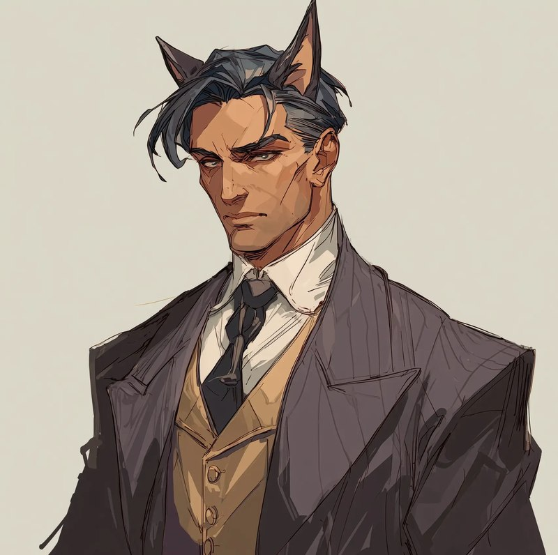
팔릭스 그린벨트
기계 심장을 브라에스 시에 유통하는 민첩한 상인이자 비밀스러운 중개인. 출처를 묻지 않는 대신 비밀을 지키는 것으로 계약을 맺으며 대부분 혼자 일하고, 여행으로 세상 각지의 소문에 밝아 소거법으로 기계 심장의 창조자가 전설의 마법사 아르카딘임을 추측해냈다. 1화, 누군가에게 독을 먹고 사무실 의자에 쓰러진 채 발견되며 사건의 실마리를 연다.
명단 검증 (15명)
PC 3명(콰에리온 녹티스, 판델라, 자글롬) + NPC 12명(에일라, 스트레가, 토라스 리프핸드, 세틀러 브라이진, 실반 브라이진, 타임필드, 군단의 잔당들, 콜린 브루어, 유리드 투어리, 메이퀸 발로, 클락시, 팔릭스 그린벨트) = 15명. 인물 데이터베이스(database.2ad00541/)의 인물 페이지 15개와 1:1로 대조해 빠짐·중복이 없음을 확인했다. “군단의 잔당들”은 데이터베이스상 한 항목으로, 레이피어·도베르트 다 사니치·붉은 발티야·은빛 사붓한 바람·황금빛 타오르는 눈보라·일레나 여섯 명을 묶은 그룹 카드다(자매 캠페인 Relight의 등장인물). 데이터베이스에서 함께 언급된 나시엘과 잿불의 왕은 일행이 아니므로 초상에서 제외했다.